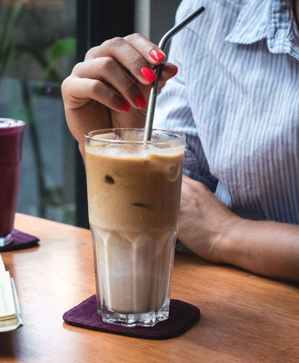
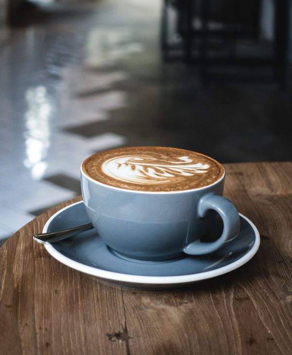

Full rich aroma

Coffee aroma is responsible for all coffee flavor attributes other than the mouthfeel and sweet,
salt, bitter, and sour
taste attributes that are perceived by the tongue. Therefore, it might be said that coffee aroma is
the most important
attribute to specialty coffee. Even instant coffee has the components responsible for stimulation of
our taste buds. The
difference, however, is that instant coffee lacks most of the aromatic volatile compounds causing a
dramatic decrease in
the overall coffee flavor.
Always inhale your coffee before taking a sip. Your taste buds can identify the four basic tastes –
sour, bitter, sweet,
and salty. On the other hand, the nose can detect thousands of aromas. So, cup your hand over your
cup and hold it close
to your nose. Take a delightful smell and identify the scented undertones.
The taste buds are limited when it comes to detecting flavor profiles. Thus, professionals use the
aroma to identify
hints of flavors in coffee. For instance, you’d be able to smell citrusy, floral, and fruity
undertones in your coffee.
These can be easily missed out when you rely on your tastebuds for taste identification. Because of
the crucial part of
the coffee aroma, smelling the brew before taking a sip is the first step to coffee tasting. Doing
this best detects the
accenting flavors in your brew.
Unique flavor
There are hundreds of ways to enjoy a cup of coffee. A simple adjustment in the brew can instantly
transform its taste.
But why does coffee taste so different? The things that make coffee taste different are due to its
ingredient, and
partly, it is also about its science.
One key factor that addresses the question of what makes coffee taste different is the beans'
origin. Each growing
region renders a specific trait or characteristics to your coffee and enhances its flavor profile.
For instance, Kenya and Sumatra are popular origins of coffee, and they have different climates for
growing their beans.
When it comes to the taste of coffee, professionals with refined palate will tell you that there is
no single coffee
taste. The use of the coffee taster wheel is but to guide you in coming up with a description.
Coffee taste is
influenced by its origin, processing, roasting quality, and preparations. To perceive the taste
using the taste buds,
the Coffee Taste Chart, or the Coffee Tasting Wheel, starts with four basic tastes – sour, salty,
sweet, and bitter. As
it spans outwards, it follows your exploration of the flavors you identify in your cup.
When reading through various coffee varieties, you may think that the descriptions are embellished,
confusing, or
exaggerated. But when you learn how to describe coffee tastes, you will be able to interpret these
words better. More
so, understanding how to describe coffee allows you to recognize the brew by merely taking a sip
from your cup. A
refined coffee taster will also be able to leave an accurate description of the taste of coffee
after thoroughly
enjoying your brew.
Strong coffee

Do you desire strong coffee? Do you want the strongest coffee in the world? Do you think your coffee
is weak?
The idea of strong coffee is probably the most culturally communicated desire. “How do you like your
coffee?” “Strong,
and black.” “I don’t care how you make the coffee as long as it’s strong!” And of course the bevy of
businesses
representing ‘the strongest coffee.’ It’s one of the most demanded things by coffee drinkers
everywhere. Yet, there’s
seemingly no consistent (or accurate) connection to reality when it comes to individuals knowing
what ‘strong coffee’
really is.
If you search online to learn about strong coffee, you’ll find many people discussing various
interpretations. In the
coffee industry circles, those who subscribe to the technically correct approach to all things
coffee will talk about
‘strong coffee’ as a myth, or a fallacy. It would be easy to follow this route simply because
‘strength’ has a technical
definition which has little bearing on the reality of people’s experience. That is, what all the
other interpretations
of strength in coffee refer to have merely a tertiary connection with the actual technical
definition.
Strong coffee is high in caffeine.
Strong coffee is darker and ‘bolder’ (another trip word). Strong coffee is a higher intensity of
flavor.Strong coffee
gives you a bigger kick, a bigger reaction, it smacks you in the face. Regardless of the above
perceptions, by and large
people approach strong coffee by looking for roasted coffee which is ‘stronger.’ This is where the
technical definition
and reality do not meet. If strong coffee really is a factor of having greater % of coffee solids in
your cup, then the
roast or bean matters not at all. You would simply just brew with more coffee using the same amount
of water, and you’d
have strong(er) coffee.